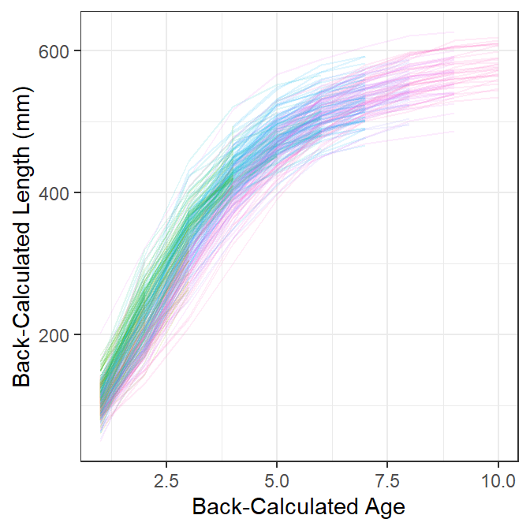
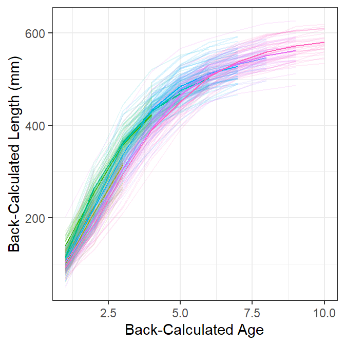
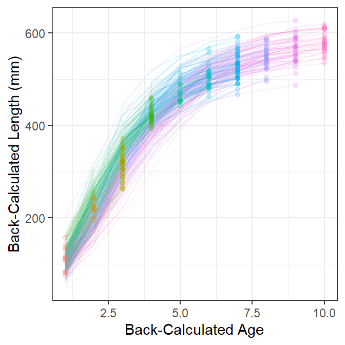
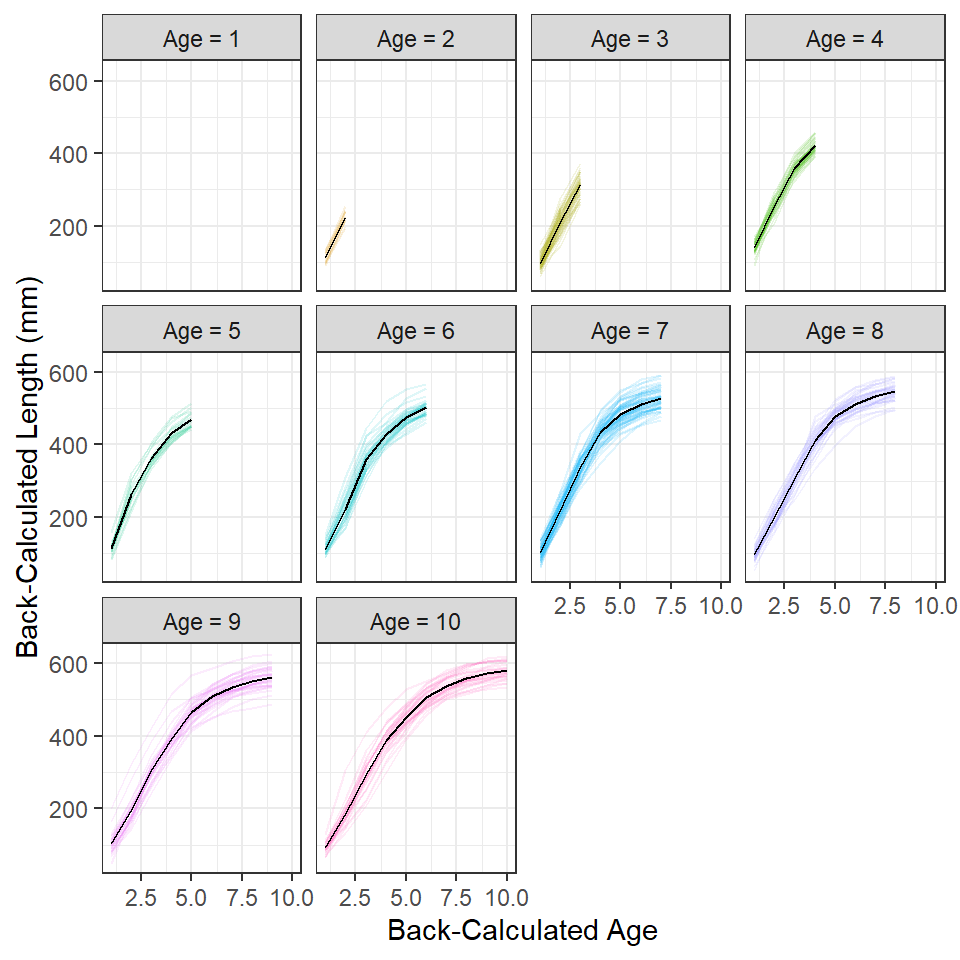
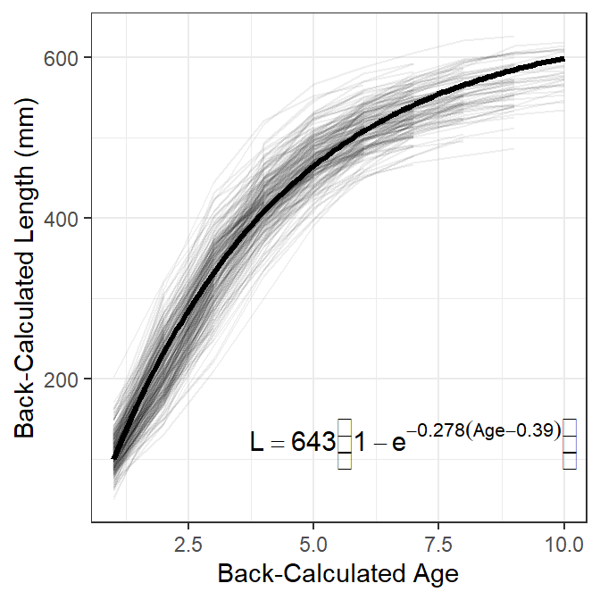

library(FSA) # for filterD(), headtail()
library(dplyr) # for select(), arrange(), mutate(), group_by(), et al.
library(nlme) # for nlme()
library(ggplot2)
theme_set(theme_bw())
Note
The following packages are loaded for use below. I also set the default ggplot theme to theme_bw() for a classic “black-and-white” plot (rather than the default plot with a gray background).
Introduction
One reader commented on a past post via Twitter …
Now that you solved the age-bias plot, how about the ‘best’ display of back-calculated length-at-age data, with VonB growth curve overlay?
In addition, I recently received a question related to the non-convergence of a hierarchical (mixed) model applied to fitting a von Bertalanffy growth function (VBGF) to back-calculated lengths at age. In exploring that question, I realized that a “good” plot of back-calculated lengths-at-age was needed to understand why the VBGF may (or may not) fit.
This post represents my initial attempts to visualize back-calculated lengths at age with what are basically spaghetti plots. Spaghetti plots show individual longitudinal traces for each subject (e.g., one example). Recently “spaghetti plots” were in the news to show modeled paths of hurricanes (e.g., I particularly enjoyed this critique).
Data
In this post, I examine back-calculated lengths (mm) at age for Walleye (Sander vitreus) captured from Lake Mille Lacs, Minnesota in late fall (September-October).1 These data were kindly provided by the Minnesota Department of Natural Resources, are available in FSAData, and were used extensively in Ogle et al. (2017). For simplicity of presentation here, these data were reduced (with filter()) to a single year and sex, several unneeded variables were removed (with select(), a new factored version of the estimated age variable was created (with mutate()), and the data were ordered by estimated, fish identification number, and back-calculated age.
1 More details are here.
## Get data
data(WalleyeML,package="FSAdata")
## Wrangle data
df <- WalleyeML |>
filter(Year==2002,Sex=="F") |>
select(-Year,-Sex,-Scale.Rad,-Dist.Ann) |>
mutate(fEst.Age=factor(Est.Age)) |>
arrange(Est.Age,ID,BC.Age)
## Examine results
headtail(df,n=5)#R| ID Est.Age TL BC.Age BC.Len fEst.Age
#R| 1 2002.10416.F 1 232 1 81.21 1
#R| 2 2002.10493.F 1 248 1 114.60 1
#R| 3 2002.10606.F 1 287 1 112.21 1
#R| 4 2002.1153.F 1 273 1 116.29 1
#R| 5 2002.1154.F 1 244 1 157.55 1
#R| 1864 2002.20742.F 10 592 6 523.52 10
#R| 1865 2002.20742.F 10 592 7 539.77 10
#R| 1866 2002.20742.F 10 592 8 554.83 10
#R| 1867 2002.20742.F 10 592 9 567.56 10
#R| 1868 2002.20742.F 10 592 10 576.20 10These fish were captured in late fall such that the observed length includes current year’s growth. However, the observed age does not account for time since the fish’s “birthday.” In other words, the observed age at capture should be a “fractional age” such that it represents completed years of growth plus the fraction of the current year’s growth season completed (i.e., the “current age” should be something like 10.9 rather than 10). An example of this is seen by comparing the observed length at capture (in TL) and the back-calculated length (in BC.Len) to age-1 for the first fish in the data.frame (first line in data shown above).
Some of the plots below require a data frame where the length and age for the oldest age match in time. In other words, this data.frame should contain the length of the fish on the fish’s last “birthday.” With these data, that length is the back-calculated length at the age (in BC.Age) that matches the age of the fish at the time of capture (in Est.Age).2 An example of this data frame is below (especially compare the last five lines below to the last five lines in the previous data frame snippet above).
2 With other data, that length may simply be the length of the fish at the time of capture.
# data.frame of just lengths at last full age
df2 <- df |>
filter(BC.Age==Est.Age)
headtail(df2,n=5)#R| ID Est.Age TL BC.Age BC.Len fEst.Age
#R| 1 2002.10416.F 1 232 1 81.21 1
#R| 2 2002.10493.F 1 248 1 114.60 1
#R| 3 2002.10606.F 1 287 1 112.21 1
#R| 4 2002.1153.F 1 273 1 116.29 1
#R| 5 2002.1154.F 1 244 1 157.55 1
#R| 311 2002.20381.F 10 568 10 563.73 10
#R| 312 2002.20483.F 10 594 10 580.81 10
#R| 313 2002.20511.F 10 628 10 618.89 10
#R| 314 2002.20688.F 10 620 10 611.08 10
#R| 315 2002.20742.F 10 592 10 576.20 10Finally, in some plots below the mean back-calculated length at age is included.3
3 as.data.frame() removes the tibble class and the remaining grouping level from this data frame.
# data.frame of mean lengths at back-calculated ages
df3 <- df |>
group_by(fEst.Age,BC.Age) |>
summarize(mnBC.Len=mean(BC.Len)) |>
as.data.frame()
headtail(df3,n=5)#R| fEst.Age BC.Age mnBC.Len
#R| 1 1 1 111.3464
#R| 2 2 1 113.4633
#R| 3 2 2 225.3060
#R| 4 3 1 98.5338
#R| 5 3 2 211.4096
#R| 51 10 6 505.5437
#R| 52 10 7 538.0147
#R| 53 10 8 558.6757
#R| 54 10 9 571.4900
#R| 55 10 10 579.8577Plots for Exploratory Data Analysis
When modeling fish growth, I explore the data to make observations about (i) variability in length at each age and (ii) “shape” of growth (i.e., whether or not there is evidence for an horizontal asymptote or inflection point). When using repeated-measures data, for example from back-calculated lengths-at-age, I observe the “shape” of growth for each individual and (iii) identify how the back-calculated lengths at age from older fish compare to the back-calculated lengths at age from younger fish.4 In this section, I describe two plots (with some augmentations to the first type) that could be useful during this exploratory stage. In the last section, I describe a plot that could be used for publication.
4 As major differences could suggest “Lee’s Phenomenon”, substantial changes in growth between year-classes or over time, or problems with the back-calculation model.
Figure 1 shows longitudinal traces of back-calculated lengths at age for each fish, with separate colors for fish with different observed ages at capture. From this I see variability of approximately 100 mm at each age, individual fish that generally follow the typical shape of a VBGF, and some evidence that back-calculated lengths at earlier ages from “older” fish at capture are somewhat lower than the back-calculated lengths at earlier ages for “younger” fish at capture (this is most evident with the pinkish lines).
sp <- ggplot(data=df,aes(x=BC.Age,y=BC.Len,color=fEst.Age,group=ID)) +
geom_line(alpha=1/8) +
scale_x_continuous("Back-Calculated Age") +
scale_y_continuous("Back-Calculated Length (mm)") +
theme(legend.position="none")
sp
Figure 2 is the same as Figure 1 except that heavy lines have been added for the mean back-calculated lengths at age for fish from each age-at-capture. Here the evidence that back-calculated lengths at earlier ages from “older” fish at capture are somewhat lower than the back-calculated lengths at earlier ages for “younger” fish at capture is a little more obvious.
sp +
geom_line(data=df3,
aes(x=BC.Age,y=mnBC.Len,group=fEst.Age,color=fEst.Age))
Figure 3 is the same as Figure 1 but also has points for the length and age of each fish at the last completed year of growth. These points are most near to the observed lengths and ages at capture5 and, thus, most nearly represent the data that would be used to fit a growth model if back-calculations had not been made. With this I observe that most traces of back-calculated lengths-at-age pass near these points, which suggests that “growth” has not changed dramatically over the time represented in these data and that the model used to back-calculate lengths and ages is not dramatically incorrect.
5 They will be the observed lengths and ages at capture for datasets where the fish were captured prior to when the current season’s growth had commenced.
sp +
geom_point(data=df2,aes(color=fEst.Age),alpha=1/5)
The previous plots are cluttered because of the number of individual fish. This clutter can be somewhat reduced by creating separate spaghetti plots for each observed age at capture (Figure 4). From this, I observe the clear start of an asymptote at about age 5, an indication of a slight inflection around age 2 (most evident for fish that were older at capture), and that a good portion of the variability in length at early ages may be attributable to fish from different year-classes (i.e., of different observed ages-at-capture). It is, however, more difficult to see that back-calculated lengths at earlier ages from “older” fish at capture are somewhat lower than the back-calculated lengths at earlier ages for “younger” fish at capture.6
6 I left the facet for age-1 fish in this plot to remind me that there were age-1 fish in these data, even though they do not show a trace. Also, the color here is superfluous and could be removed. I left the color here for comparison with previous figures.
## Make facet labels for the plot below
lbls <- paste("Age =",levels(df$fEst.Age))
names(lbls) <- levels(df$fEst.Age)
## Spaghetti plot separated by age at capture (with means)
sp +
facet_wrap(~fEst.Age,labeller=labeller(fEst.Age=lbls)) +
geom_line(data=df3,aes(x=BC.Age,y=mnBC.Len,group=1),color="black")
Publication Graphic with Model Overlaid
For publication I would include traces for individual fish, but without color coding by estimated age-at-capture, and overlay the population-average growth model (i.e., the growth model expressed from using the “fixed effects” for each model parameter; Figure 5).7
7 The model fitting code below is from Ogle et al. (2017).
## Create the Von B Function using logged version of Linf (to ease scale issue)
vbT <- function(T,logLinf,K=NULL,t0=NULL) {
if (length(logLinf)==3) {
t0 <- logLinf[[3]]
K <- logLinf[[2]]
logLinf <- logLinf[[1]]
}
exp(logLinf)*(1-exp(-K*(T-t0)))
}
## Generate starting values from last completed length and age data
vbStarts(BC.Len~BC.Age,data=df2)#R| $Linf
#R| [1] 624.3608
#R|
#R| $K
#R| [1] 0.2767802
#R|
#R| $t0
#R| [1] 0.2903228svVB <- list(fixed=c(logLinf=log(624.361),K=0.276,t0=0.290))
## Fit hierarchical von B to back-calcd data (BE PATIENT)
## Will estimate population-average parameters (fixed-effect values)
## and parameters for each individual (in coefficients).
fitVB <- nlme(BC.Len~vbT(BC.Age,logLinf,K,t0),data=df,
fixed=list(logLinf~1,K~1,t0~1),
random=logLinf+K+t0~1|ID,
start=svVB)## von B equation for the plot
( tmp <- fixef(fitVB) )#R| logLinf K t0
#R| 6.4662516 0.2784915 0.3922489lbl <- paste("L==",round(exp(tmp[1]),0),
"*bgroup('(',1-e^-",round(tmp[2],3),
"(Age-",round(tmp[3],2),"),')')")
ggplot(data=df,aes(x=BC.Age,y=BC.Len,group=ID)) +
geom_line(alpha=1/15) +
stat_function(data=data.frame(T=seq(1,10,0.1)),aes(x=T,y=NULL,group=NULL),
fun=vbT,args=list(logLinf=fixef(fitVB)),linewidth=1.1) +
geom_text(data=data.frame(x=7,y=120),aes(x=x,y=y,group=NULL,
label=lbl),parse=TRUE,size=4) +
scale_x_continuous("Back-Calculated Age") +
scale_y_continuous("Back-Calculated Length (mm)") +
theme(legend.position="none")
References
Ogle, D. H., T. O. Brenden, and J. L. McCormick. 2017. Growth Estimation: Growth Models and Statistical Inference. Pages 265–359 in M. C. Quist and D. A. Isermann, editors. Age and Growth of Fishes: Principles and Techniques. American Fisheries Society, Bethesda, MD.
Reuse
Citation
BibTeX citation:
@misc{h.ogle2017,
author = {Derek H. Ogle},
title = {Plots of {Back-Calculated} {Lengths-At-Age}},
date = {2017-11-07},
url = {https://fishr-core-team.github.io/fishR//blog/posts/2017-11-7_BackCalculationPlot},
langid = {en}
}
For attribution, please cite this work as:
Derek H. Ogle. 2017, November 7. Plots
of Back-Calculated Lengths-At-Age.